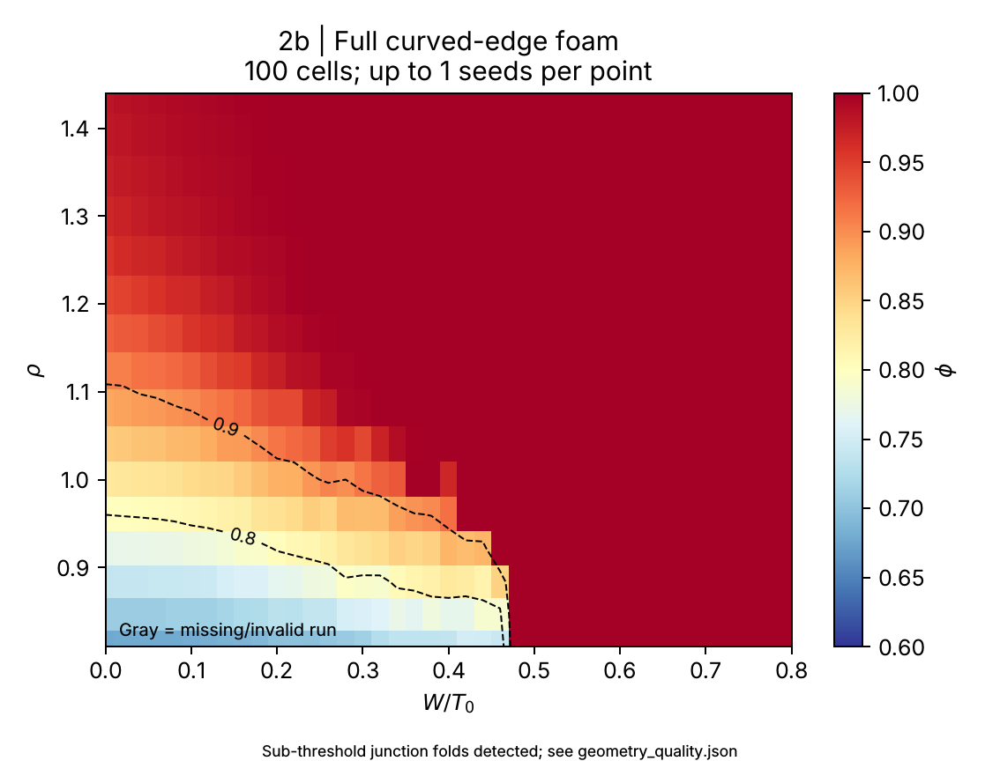
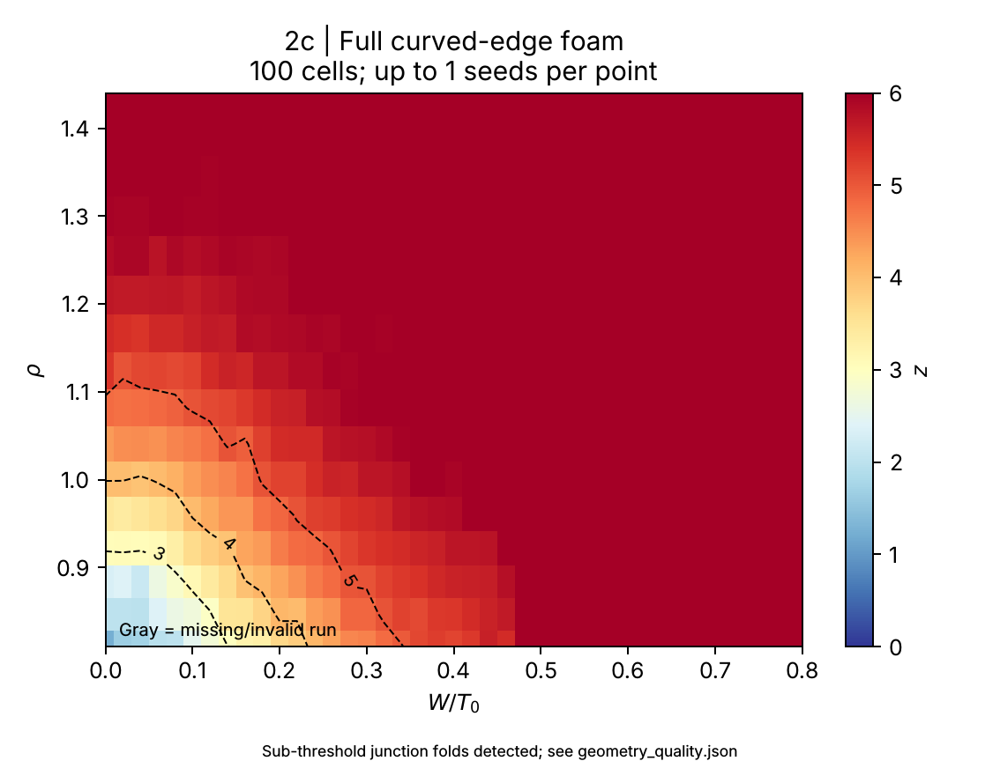

Figure 2b


Figure 2c

Full curved-edge foam. 656/656 simulations completed. 100 cells; 1 seed(s) per parameter point. Full model throughout; dt=0.005 τ_R.
This finite-size, coarse-grid run is not the published 10–20-run ensemble. Sub-threshold junction folds are recorded; resolved tangles are rejected. Missing data are not imputed.
Protocols and limitations · Geometry diagnostics · Fit results


Source hash: b6aa2569390e3ad8de969127963f55ee6271963ef00453e0fe6ac3fe12fe135a